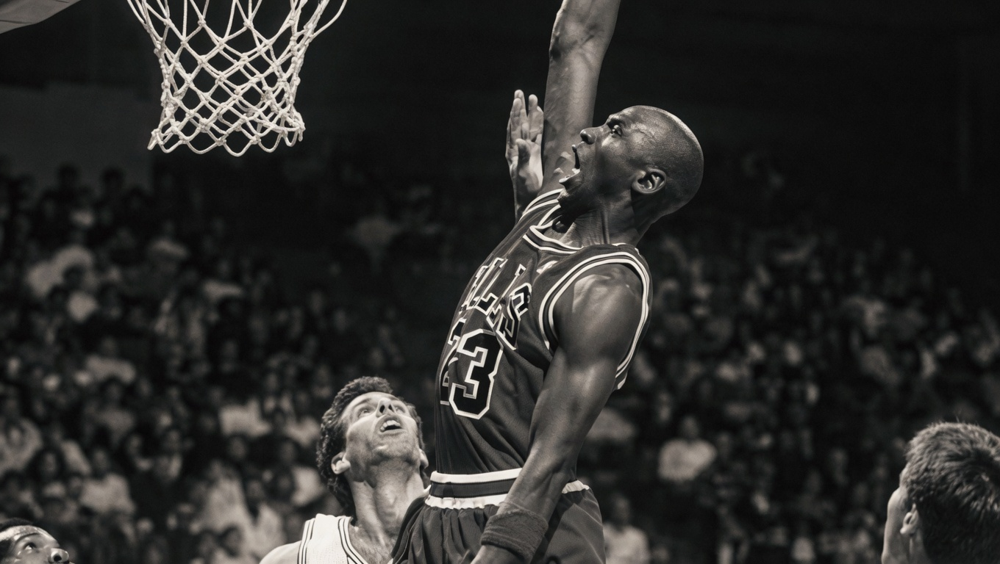

JUST DO IT.
Do icônico salto de Michael Jordan
aos recordes de LeBron James
Uma marca que transcendeu o
esporte e se tornou cultura.
O legado continua.
A inspiração nunca para.

A história da Nike e da Jordan Brand é muito mais que tênis e basquete.
É sobre superação, inovação e a vontade constante de ser o melhor.
Desde o primeiro Air Jordan em 1985 até hoje, essas duas marcas transformaram o
esporte, a cultura e a forma como o mundo se veste.
Aqui você encontra tudo sobre o passado, o presente e o futuro da Nike e Jordan:
lançamentos, histórias icônicas, coleções clássicas e o que está por vir.
 Air Jordan 1
Air Jordan 1
 Air Jordan 2
Air Jordan 2
 Air Jordan 3
Air Jordan 3
 Air Jordan 4
Air Jordan 4
 Air Jordan 5
Air Jordan 5
 Air Jordan 6
Air Jordan 6
 Air Jordan 7
Air Jordan 7
 Air Jordan 8
Air Jordan 8
 Air Jordan 9
Air Jordan 9
 Air Jordan
10
Air Jordan
10 Air Jordan
11
Air Jordan
11 Air Jordan
12
Air Jordan
12 Air Jordan
13
Air Jordan
13 Air Jordan
14
Air Jordan
14 Air Jordan
15
Air Jordan
15 Air Jordan
16
Air Jordan
16 Air Jordan
17
Air Jordan
17 Air Jordan
18
Air Jordan
18 Air Jordan
19
Air Jordan
19 Air Jordan
20
Air Jordan
20 Air Jordan
21
Air Jordan
21 Air Jordan
22
Air Jordan
22 Air Jordan
23
Air Jordan
23 Air Jordan
24
Air Jordan
24 Air Jordan
25
Air Jordan
25 Air Jordan
26
Air Jordan
26 Air Jordan
27
Air Jordan
27 Air Jordan
28
Air Jordan
28 Air Jordan
29
Air Jordan
29 Air Jordan
30
Air Jordan
30 Air Jordan
31
Air Jordan
31 Air Jordan
32
Air Jordan
32 Air Jordan
33
Air Jordan
33 Air Jordan
34
Air Jordan
34 Air Jordan
35
Air Jordan
35 Air Jordan
36
Air Jordan
36 Air Jordan
37
Air Jordan
37 Air Jordan
38
Air Jordan
38 Air Jordan
39
Air Jordan
39 Air Jordan
40Air Jordan 1
Air Jordan 2
Air Jordan 3
Air Jordan 4
Air Jordan 5
Air Jordan 6
Air Jordan 7
Air Jordan 8
Air Jordan 9
Air Jordan
10Air Jordan
11Air Jordan
12Air Jordan
13Air Jordan
14Air Jordan
15Air Jordan
16Air Jordan
17Air Jordan
18Air Jordan
19Air Jordan
20Air Jordan
21Air Jordan
22Air Jordan
23Air Jordan
24Air Jordan
25Air Jordan
26Air Jordan
27Air Jordan
28Air Jordan
29Air Jordan
30Air Jordan
31Air Jordan
32Air Jordan
33Air Jordan
34Air Jordan
35Air Jordan
36Air Jordan
37Air Jordan
38Air Jordan
39Air Jordan
40
Air Jordan
40Air Jordan 1
Air Jordan 2
Air Jordan 3
Air Jordan 4
Air Jordan 5
Air Jordan 6
Air Jordan 7
Air Jordan 8
Air Jordan 9
Air Jordan
10Air Jordan
11Air Jordan
12Air Jordan
13Air Jordan
14Air Jordan
15Air Jordan
16Air Jordan
17Air Jordan
18Air Jordan
19Air Jordan
20Air Jordan
21Air Jordan
22Air Jordan
23Air Jordan
24Air Jordan
25Air Jordan
26Air Jordan
27Air Jordan
28Air Jordan
29Air Jordan
30Air Jordan
31Air Jordan
32Air Jordan
33Air Jordan
34Air Jordan
35Air Jordan
36Air Jordan
37Air Jordan
38Air Jordan
39Air Jordan
40
Todos os tênis Jordan carregam um legado único, mas o design do Air Jordan 1 de Peter Moore foi uma colagem de elementos do catálogo de basquete da Nike. Isso não significa que o modelo não tenha identidade própria – muito pelo contrário. A postura ereta e os painéis tradicionais fizeram do modelo o veículo perfeito para o color blocking e a narrativa visual inspirados no Chicago Bulls . E graças à mitologia "Banned" magistralmente construída, que cresce a cada relançamento e releitura , a aura de rebeldia do AJ1 se enraizou profundamente na psique dos sneakerheads.
A CARA DAS RUAS
Antes dos holofotes, antes dos contratos milionários, antes dos estádios lotados, havia a rua. O asfalto rachado, a quadra sem tabela, o tênis surrado que ainda precisava durar mais um verão. Foi ali, longe de qualquer câmera, que o estilo nasceu de verdade. Não foi inventado. Foi vivido. A Nike nunca precisou criar a cultura das ruas, ela simplesmente reconheceu o que já existia e decidiu estar do lado certo da história. Do playground do Brooklyn às vielas de Chicago, a swoosh virou símbolo de quem não espera oportunidade, se cria.
Ninguém é igual, e é isso que torna tudo especial. Todo gosto é válido. Vista-se como você se sente, seja
autêntico e brilhe do seu jeito.